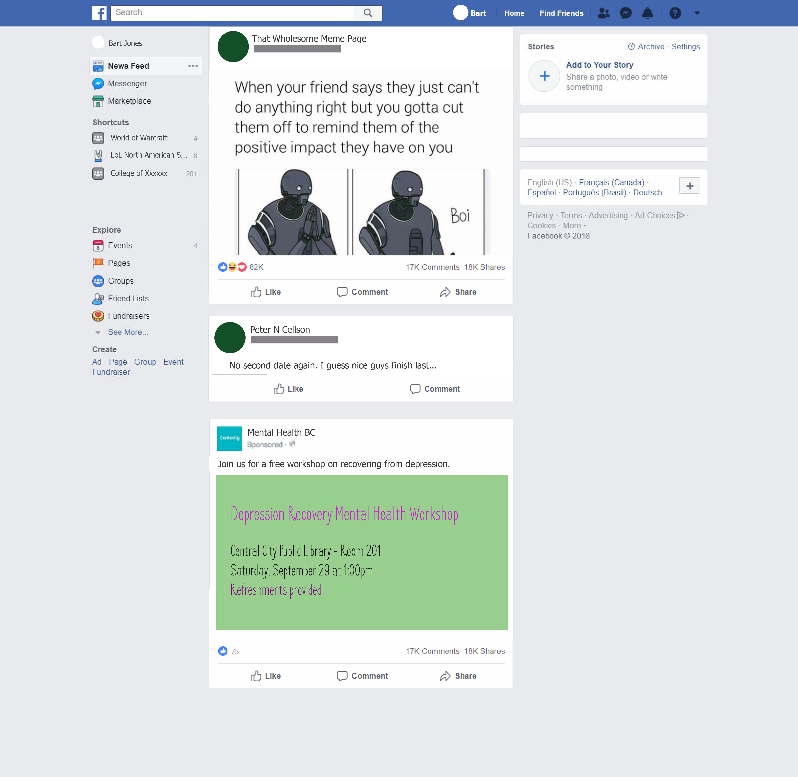

Category: 7-hour design jam
Tools: Design thinking, diagramming, Adobe Illustrator, Proto.io
Team: Team of 6, mix of engineering, economics, and business students
In the Ideas Into Ventures Design Jam hosted by Coast Capital Savings Venture Connection, participants were randomly dispersed into teams, making sure each team had a mix of students with design, engineering, and business backgrounds. My team worked with the prompt:
"Much of the cutting edge of AI research and development now takes place within the walls of companies whose primary business model is advertising — and so, having this existing profit motive to serve, it's only natural that their first priority would be to apply their innovations toward growing their business. What solutions can we propose to free our attention from the clutches of powerful tools like AlphaGo (a project by Google's DeepMind division) so that we can "want what we want to want"?"
After some discussion, we realized that because auto-generated content usually shows up on a user's feed based on the user's previously consumed content, the user does not need to think much about what they want, and that can lead to users not knowing what they want. It may also lead users to continuously view content of similar topics. In extreme examples involving sensitive political/social topics, this can lead to the user being stuck in an echo chamber.
Prompted by the content on the Facebook page InfoWars and the arising incel movement, we set out to narrow our target to echo chambers regarding controversial topics. One strong focus we had was the negative effects on society that came with the incel movement.
Opportunity statements generated include:
How may we put an end to 'echo chamber' thinking?
How may we gradually transition unaware users out of their echo chambers?
We created a persona to create a focus on the target market:
"Bob is a 25-year-old college student working a part-time low-paying job. He spends most of his free time playing video games and browsing the internet. Because Bob feels demotivated and victimized in life, and he commonly views Facebook posts and pages about sensitive topics (including InfoWars), Bob is continuously developing chauvinistic and anti-immigration beliefs. Bob may feel self-righteous, but the grasp that AI-generated content has on his viewing habits only pushes him further into his echo chamber."
Brainstorming notes on our concept, plus a quick persona sketch. Created by me.
Throughout our ideation process, we discovered two ways to categorize our solution's approach: Prevention vs Correction. Prevention would involve education early on in grade school about the power of AI to influence our desires and habits. Correction would involve gradually rehabilitating someone who appears unaware they are in a harmful echo chamber.
We thought of the different ways users could react to prevention and correction. While prevention could work if children had repeated education on the dangers of excessively consuming auto-generated content, they may see it as an uninterested 'extra class ' the teachers push on them. A challenge with correction include that it will not work effectively if there are explicit reminders that a user is stuck in an echo chamber. That could be viewed as an infringement on their rights to freedom of belief and potentially repel the user.
We chose the corrective approach, as it opened doors to include consistent positive reminders to a user's social media feed, which they likely use very frequently. Freeing users of their echo chambers can only be a long-term potential solution with this approach. The reason this approach works with our persona is because Bart cannot easily find something to be positive about in real life, so he turns to the internet to vent his feelings. This can imply he feels lonely, and that he desires doses of positivity.
The proposed prototype, named Rebound, is our solution to help users at risk of over-consuming AI generated sensitive content that can ingrain echo chamber modes of thought. The prototype is a middleman advertising service used in automated content generation.
Rebound communicates with business who use AI for advertising, such as Facebook and Google, and provides non-profit organizations and for-profit businesses with the opportunity to target audiences like Bart. Rebound will detect if a user is potentially at risk of over-consumption of auto-generated content of a sensitive, echo-chamber-prone topic by recording the frequency they see such content and the duration of time they spend on it.
The value Rebound adds to the user's social media experience include the ability for not-for-profit organizations and for-profit businesses to understand and target at-risk audiences, provide users with advertisement services that cannot be selected through automated generation, and to offset the negative feelings that may fuel echo-chamber thinking. Through targeted advertising, Rebound also increases awareness of mental health issues prevalent in society today.
Facebook feed mockup after Rebound has been implemented. Created by me.
After the design jam was over, I created the prototype on my own using Proto.io, since the design jam did not have a technology requirement and few people had time to create digital presentation materials. On our presentation slides, my teammate Raaj made a starter interface for companies to choose their advertising interests.
I moved forward with the idea of a scrollable front page containing all the information since this concept of Rebound's AI can be unclear to a first-time user. These scrolling pages contained information about what Rebound is, who are the providers, who are the end users, and what the end result looks like to the users. In customer service, Rebound's focused was established as promoting positive thinking and a positive browsing experience, since this can be a step toward converting negative ideologies on the internet.
I also needed a conceptual visualization for the difference between 'before' and 'after' to clearly convey the idea. This was implemented on the final scrolling page before the button to go to the login page. A business wanting to get involved with positive AI-generated content could sign up/log in with an email and password, and select their advertising interests similar to how it was displayed on the starter interface.
As I had not worked with Proto.io's scrollable containers beforehand, a part of the challenge was to figure out how to add interactions to the containers while keeping in mind what scope the other UI elements were (inside or outside of a certain container). The colour scheme had green and cool gray hues, as green signified positivity and I felt it distracting to have another non-neutral colour in the palette.
During Q&A, a question was how we could handle negative feelings that come from competitive gaming, which the user is not passively viewing, but actively participating in. We consider this to be future avenue of expansion, since some gaming communities are known to be toxic and their members are expected to conform. A start could be to reach out to positive gaming communities and allow them to generate positive messages or gaming meetups through Rebound's service.
Marta Sanaú,Raaj Chatterjee,Jasan Lidhar,Sumreen Rattan,Tatum Miller